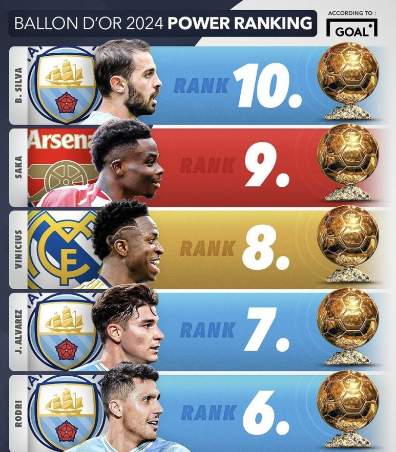

축구를 사랑하시는 여러분들 안녕하세요. 매일 아침 5시마다 새로운 국내 - 해외 축구 소식을 전해드리는 축구선수 연제민입니다. 기존에 매일 6시마다 축구 소식을 전해드렸다면 조금 더 하루를 빠르게 시작하는 분들을 위해 5시로 변경하였습니다. 그러니 누구보다 더 빠르게 새로운 축구 소식을 전해드릴 수 있게 되었습니다. 11월 27일 월요일 아침으로 전해드릴 해외 축구 소식은 '발롱도르 예상 순위 6위부터 10위'입니다.
얼마 전 발롱도르 예상 순위 16위 ~ 20위를 전해드렸고, 토요일에는 예상 순위 10위 ~ 15위 선수들을 소개해 드렸습니다. 그래서 오늘은 발롱도르 예상 순위 6위부터 10위까지 선수들을 알려드리려고 하는데요. 2024발롱도르 시상식이 치러지기 위해선 아직 일 년 가까운 시간이 남아 있지만 2023발롱도르 시상식이 끝난 뒤 2024발롱도르에 대한 관심이 뜨거워졌습니다. 그래서 유럽 현지 매체는 2023년 현재까지 치러진 경기들을 바탕으로 좋은 활약을 보여주고 있는 선수들을 평가해 2024발롱도르 예상 순위 1위부터 20위까지 선정하였고, 차례대로 소식을 전해드리고 있습니다. 오늘 전해드리는 예상 순위 6위부터 10위까지에 대해 관심을 가져주신다면 빠른 시일 내에 2024발롱도르 예상 순위 1위부터 5위까지 소개해 드리겠습니다.
그럼 2024발롱도르 예상 순위 6위부터 10위에는 어떤 선수들이 포함되었는지 알려드리겠습니다.
